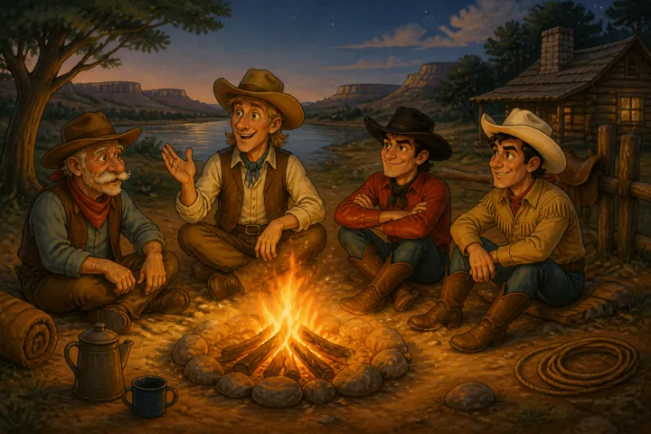
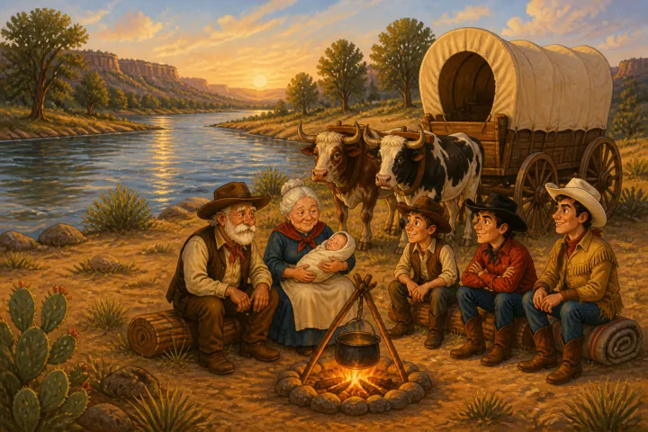
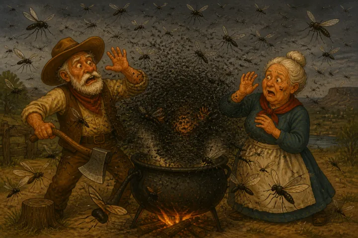
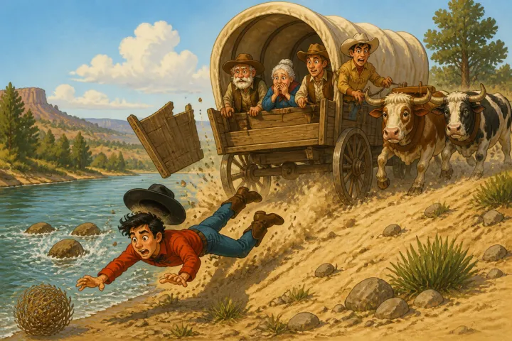

THE GENESIS OF PECOS BILL
“I suppose,” said Lanky, as he sat by the camp-fire with Red and Hank
and Joe, now his fast friends, “that the cowboy’s life is about the most interesting one there is. I’d like it. Live outdoors, plenty of fresh air to breathe, interesting work--that’s the life.”
“I ain’t kickin’,” said Joe. “You see I’m still at it, though I’ve
cussed it as much as anybody in my time, and swore off and quit, too, more than once. But somehow when spring comes, and the grass gits green, and I know the calves is comin’, somethin’ jest naturally gits under my hide, and I come back to the smell of burnt hair and the creak of saddle-leather.”
“Yeah,” said Red, “it’s jist like a dream I had once. I dreamt I died
and went up to a place where there was big pearly gates, and I walked up and knocked on the door, and it come wide open. I went in, and there stood Saint Peter.
“‘Come in; welcome to our city,’ he says. ‘I’ve been lookin’ for you.
Go over to the commissary and git you a harp and a pair of wings.’
“‘All right,’ says I, feelin’ mighty lucky to git in.
“As I walked along on the gold sidewalk, I sees a lot of fellers roped
and hobbled and hog-tied.
“‘What’s the matter?’ says I; ‘Saint Peter, you’re not tryin’ to buffalo me, are you?’
“‘Naw,’ he says, ‘what makes you think so? Your record ain’t nothin’
extra good, but you didn’t git cut back, did you? Here you are. You’re in. Ain’t that enough?’
“‘Ain’t this hell?’ I says.
“‘Naw’, says Peter, ‘this ain’t hell a-tall.’
“‘Are you shore this ain’t hell?’ I asks.
“‘Naw,’ he says, ‘this ain’t hell. What makes you think it is?’
“‘Why,’ I says, ‘what you got all them fellers roped and tied down for?’
“‘Oh,’ he says, ‘them fellers over there? You see them’s cowboys from the Southwest, and I have to keep ’em tied to keep ’em from goin’ back. I think maybe they’ll git range broke after while so I can turn ’em loose, but it seems like it’s takin’ a long time.’”
“However,” said Joe, “the cow business ain’t what it used to be, what
with barbed wire, windmills, automobiles and trucks, and the like. They don’t want cowhands any more; what they want is blacksmiths, mechanics, and the like. Still, I reckon it’s a good thing, for they couldn’t git cowhands if they did want ’em.
“Now, here’s Red and Hank. Good boys, both of ’em. And I’ve learned ’em
a lot about cattle; and they take money at the rodeos, but they ain’t like the old cowhands. I don’t know jest what it is, but they ain’t the same.
“And they ain’t but mighty few real cowmen any more. Now, take the big
mogul of this outfit. Good feller, always pays wages every month--which is more than some of the old-timers could do. But he ain’t no cowman. Sets up all day at a big desk in town--has a secretary, stenographer, and the like. Why, if Pecos Bill had a-done a thing like that, he would of been so ashamed of his self, he would of jest naturally laid down and died.”
“Who is this Pecos Bill I’ve heard you mention?” asked Lanky.
“Who is he? Why, ain’t you ever heard of Pecos Bill?”
“Not till I came here.”
“Well, well, I reckon you’ve heard of Sam Houston, and Sam Bass and
General Lee and George Washington and Pat Garrett, ain’t you?”
“Oh, yes, I’ve heard a little about them but not anything about Pecos
Bill.”
“That jest shows that the fellers that make our books don’t know what
to put in ’em. The idear of leavin’ out Pecos Bill.”
“But who was Pecos Bill?”
“Who was he? Why, he was jest about the most celebrated man in the whole dang cow country.”
“What was his real name?”
“So far as I know the only real name he ever had was Pecos Bill. Don’t
suppose anybody knows what his daddy’s name was. You see, in his day it wasn’t good manners to ask a feller his name, and besides it wasn’t good judgment either. And it ain’t been so long. Many a greenhorn bein’ ignorant of that little point of good manners has looked down the muzzle of a six-shooter and then died.
“Pecos Bill’s daddy didn’t say what they called him back in the
States, and nobody asked him. They jest called him the Ole Man, for he was old--about seventy some odd when he came to Texas.”
“When did he come to Texas?” asked Lanky.
“I couldn’t say about that exactly,” said Joe. “It must of been right
about the time Sam Houston discovered Texas. Anyhow, the Ole Man loaded up all his twelve kids and his Ole Woman and his rifle, and all his other stuff in an oxwagon and lit out hellbent for Texas as soon as he found out there was sech a place. They say other people that come later didn’t have no trouble findin’ the way. They jest went by the Indian skeletons that the Ole Man left along his road.
“Well, they finally got to the Sabine River. The Ole Man stops
his oxen, old Spot and Buck, he calls ’em, and rounds up all his younguns and has ’em set down and listen while he makes ’em a speech. ‘Younguns,’ he says, ‘that land you see on the other side of the river is Texas, wild and woolly and full of fleas. And if you ain’t that way only more so, you ain’t no brats of mine.’”
“I’d always heard that Pecos Bill was born in Texas,” interrupted Red.
“Jest wait,” said Joe. “Jest wait; have I said he wasn’t? Them was the other kids.
“As I was about to say, they crossed the river and camped for the night. That was in Texas, savvy. And that night Pecos Bill was born.

The next mornin’ the Ole Woman put him on a bear’s skin and left him to play with his self while she made the corn-pone for breakfast. And right then’s when they come dang near losin’ Pecos Bill.
“Bears or Indians?” asked Lanky.
“Neither one,” said Joe. “Bears and Indians didn’t mean nothin’ to that old man. He would have et ’em for breakfast. Once later when the Ole Man and the older brats was gone, the Comanches did try to git Bill, but the Ole Woman lit into ’em with the broom-handle and killed forty-nine right on the spot. She never knowed how many she crippled and let git away. No, it wasn’t the Indians. It was miskeeters.”
“Malaria?” said Lanky.
“You guessed wrong again,” said Joe. “This is what happened. The Ole
Woman was cookin’ corn-pone, and all of a sudden it got dark, and there was the dangest singin’ and hummin’ you ever heard. Then they seen it was a swarm of big black miskeeters; and they was so thick around Bill that you jest couldn’t see him.

“The Ole Man felt his way to the wagon and got out his gun. He thought
he’d shoot it off in the air and scere them miskeeters away. He pointed the muzzle of the gun toward the sky and pulled the trigger. What he seen then was a little beam of light come through. It was jest like bein’ in a dark room and lookin’ out through a piece of windmill pipe. That was jest for a minute, for right away the hole shet up, and them miskeeters swarmed around Pecos, and the Ole Man seen they was goin’ to pack him off if he didn’t do somethin’ right away.
“Then he happened to recollect that he’d brought his hog-renderin’
kettle along; so he fought his way back to the wagon and rolled it out and turned it over the kid. He was scered the lad would git lonesome under there by his self, so he jest slipped the choppin’ axe under the edge of the kettle for the chap to play with.
“Well, them danged miskeeters jest buzzed and buzzed around the kettle, tryin’ to find a way to git in. D’rec’ly they all backed off, and the Old Man and the Ole Woman thought they’d give up and was goin’ away. Then all at once one of them miskeeters comes at that kettle like a bat out of hell. He hit the kettle and rammed his bill clean through it; and he stuck there. Then another one come at the kettle jest like the first one had; and he stuck, too. Then they kept comin’, and every one stuck. The Ole Man and the Ole Woman and the older brats stood there watchin’ them miskeeters ram that kettle. After each one of them varmints (they was too big to be called insects) hit the kettle, there would be a little ring--_ding!_ like that. Purty soon the old folks got on to what was happenin. Every time a miskeeter would ram his bill through the kettle, Pecos would brad it with the choppin’ axe.
Well, after while them miskeeters jest naturally lifted that kettle right up and flew off with it. The others thought they had Pecos Bill and follered the kettle off. Of course the Ole Man hated to lose his utensil. He said he didn’t know how the Ole Woman was goin’ to render up the lard and bear’s grease now; but it was worth a hundred kettles to know he had such a smart brat. And from that time the Ole Man would always talk about Bill as a chap of Great Possibilities. He ’lowed that if the brat jest had the proper raisin’, he’d make a great man some day. He said he was goin’ to try to do his part by him; so he begun givin’ him a diet of jerked game with whiskey and onions for breakfast. He lapped it up so well that in three days the Ole Woman weaned him.”
“Did the Ole Man settle there on the Sabine?” asked Lanky.
“Naw,” said Joe. “He squatted on a little sandy hill on the Trinity
somewheres east of where Dallas is now. It was jest an accident that he stopped where he did.”
“How was that?” asked Lanky.
“Well,” said Joe, “you see, it was like this. They was travelin’ west
in their customary and habitual manner, which was with the Ole Man and the six oldest kids walkin’ alongside Spot and Buck, and the Ole Woman and the seven youngest kids in the wagon. Jest as they was comin’ to the foot of a sandy hill, a big rain come up. It rained so hard that the Ole Man couldn’t see the wagon, but he stuck close to them trusty oxen of his, and they went right up the hill. When he got to the top, he seen that it had about quit rainin’; and he looked back and seen the wagon still at the bottom of the hill, and there was the brats that had been walkin’ with him under it.”
“Did the harness break?” asked Lanky.
“Naw, it wasn’t that,” said Joe. “You see, he was usin’ a rawhide
lariat for a log-chain, and it had got wet. I reckon you know what rawhide does when it gits wet, don’t you, Lanky? It stretches. There ain’t no rubber that will stretch like wet rawhide. Well, that’s what happened to that lariat. It stretched so that the Ole Man drove his oxen a mile up the hill without movin’ the wagon an inch. Not an inch had he moved her, by gar.
“Well, the sun was shinin’ now, and it got brighter and brighter, and while the Ole Man was wonderin’ what in the dickens to do next, Ole Spot jest dropped down dead from sunstroke. That sort of got next to the Ole Man, for he said that brute had been a real friend to him, and besides he was worth his weight in gold. Still, he ’lowed he’d might as well skin him. So he got out his old Bowie knife and started to work.
“Well, sir, while he was skinnin’ Spot, a norther came up, and damn me, if Ole Buck didn’t keel over, froze to death.
“So the Ole Man decided he’d jest as well stop there where he was. So
he told the Ole Woman to bring up the brats. He throwed the ox yoke over a stump; and the Ole Woman brought up some chuck and some beddin’ from the wagon. Then they et supper and tucked the kids into bed. The Ole Man tried to blow out the lantern, but she wouldn’t blow. He raised up the globe, and there was the flame froze stiff as an icicle. He jest broke it off and buried it in the sand and turned in and went to sleep.
“The next mornin’ when he woke up, it was clear and the sun was warm.
Well, the Ole Woman cooked a bite, and while they was eatin’, here come the wagon right up the hill. You see the rawhide was dryin’ out. That’s the way it does.”
“That’s what it does, all right,” said Red. “Once I knowed a clod-hopper that made his self a rawhide hat. It worked fine till one day he got caught out in the rain. Then the sun come out, and that hat drawed up so he couldn’t git it off. And it was drawin’ up and mashin’ his head somethin’ terrible. Lucky for him, it wasn’t very far to a tank, and he got off and stood on his head in the water a few minutes and it come right off.”
“Well,” said Joe, “that’s what the rawhide log-chain done. It dried
out, and that wagon come right up the hill; and when it got up to where the Ole Man and the Ole Woman was, the Ole Man got his choppin’ axe and begun cuttin’ down trees to make him a cabin. And that’s where he settled.”
“Did Pecos Bill grow up there in East Texas?” asked Lanky.
“He left when he was a mere lad,” said Joe. “But he lived there a little while. The Ole Man got along fine till his corn give out, because there was plenty of game. But he jest couldn’t do without his corn-pone and his corn whiskey. So he cleared a little patch and put it in corn.”
“And worked it without his steers?” asked Lanky.
“Why not?” said Joe. “He made him a light Georgie-stock out of wood, and the Ole Woman and one of the bigger kids could pull it fine. He made some harness out of the hide of Old Spot, and he’d hitch ’em and plough all day.
“They used to all go out in the field and leave Pecos Bill in the cabin
by his self. One day when Bill was about three years old, the Ole Man was ploughin’ and jest as he turned the Ole Woman and the kid he had hitched up with her around to start a new row, the Ole Woman begun yellin’ and tryin’ to get out of the harness.
“‘What’s eatin’ on you, Ole Woman?’ says the Ole Man. ‘I never seen you
do like this before. Must have a tick in your ear.’
“The Ole Woman yelled that she seen a panther go in the cabin where
Bill was.
“The Ole Man told her not to git excited. ‘It’s a half hour by sun till dinner time yet,’ he says, ‘and that dang panther needn’t expect no help from me nohow. The fool critter ought to of had more sense than to go in there. He’ll jest have to make out the best way he can.’
“So they ploughed on till dinner time, and when they come back to the cabin, there was Pecos Bill a-chewin’ on a piece of raw panther flank.
“They lived there another year or two before the Ole Man taken a notion
to leave.”
“I reckon you know how he come to git the idear in his head, don’t you,
Joe?” said Red.
“I’ll bite,” said Joe. “Go ahead.”
“Why, this ain’t no sell,” said Red. “I’ve heard Windy Williams tell it
a hundred times.
“One time the Ole Man had the Ole Woman and one of the big kids hitched
up to the plough in his customary and habitual manner, jist as Joe has been tellin’ about, and all at once here comes a piece of paper blowin’ across the field. The Ole Woman shied a little bit off to one side; then the kid got to prancin’, and then they tore loose and went lickity-split, rearin’ and tearin’ across that corn patch, draggin’ the Ole Man with ’em. The Ole Man stumped his toe on a root, and then they got loose from him and tore up the Georgie-stock. After while they quieted down, and the Ole Man got up and fetched ’em in. Then he went out and picked up the piece of paper where it was hung on a stump. He seen it was an old newspaper. That set him to wonderin’.
“The next mornin’ he got his rifle and begun lookin’ around. About five
miles from his place he found some wagon tracks, and he follered the tracks till he come to a new cabin about fifty miles up the creek. Then he come home and told the Ole Woman and the kids to git ready to leave. He calkilated the country was gittin’ too thickly settled for him.”
“How did he get away without a team?” asked Lanky.
“Oh, that was easy,” said Red. “He sent Pecos Bill out to ketch a couple of mustangs, and in about an hour the lad run ’em down. The Ole Man fixed up the harness he’d been usin’ to plough with, and loaded in his stuff and his wife and kids, and pulled out.
“They kept goin’ west till finally they come to the Pecos River, which the Ole Man said he’d ford or bust. He got across all right, but as he was drivin’ up the bank on the west side, the end-gate come out of the wagon, and Pecos Bill fell out. The Ole Man and the Ole Woman never missed him till they got about thirty miles further on; then they said it wasn’t worth while turnin’ back. They said they guessed the chap could take kere of his self, and if he couldn’t he wasn’t worth turnin’ back for nohow. So that’s how Pecos Bill come to be called Pecos Bill.”
“What became of him?” asked Lanky. “What happened to him then?”
“What happened to him then?” said Red. “That would take a long time to tell.”
“We’ll tell you about that some other time, Lanky,” said Joe.
